Güneşli sahilleri, tarihi tramvayları, UNESCO Dünya Mirası yapıları ve sıcakkanlı insanlarıyla İber Yarımadası'nın büyüleyici ülkesi.
Portekiz'in siyasi, ekonomik ve kültürel başkenti olan Lizbon, Batı Avrupa'nın en eski şehirlerinden biridir (Roma ve hatta Londra'dan yüzyıllar önce kurulmuştur). Tejo (Tagus) Nehri'nin Atlantik Okyanusu ile buluştuğu stratejik noktada, 7 tepe üzerine inşa edilmiştir.
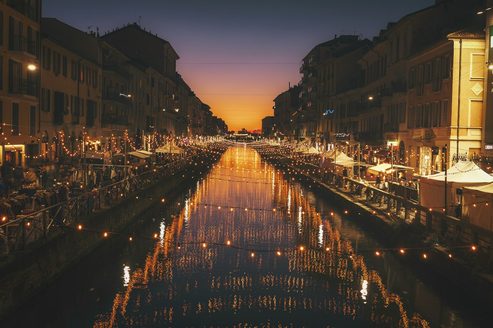
Alfama'nın dar sokaklarından geçen tarihi sarı tramvaylar, Belém Kulesi ve Jerónimos Manastırı ile Lizbon, keşifler çağının ihtişamını günümüze taşır.
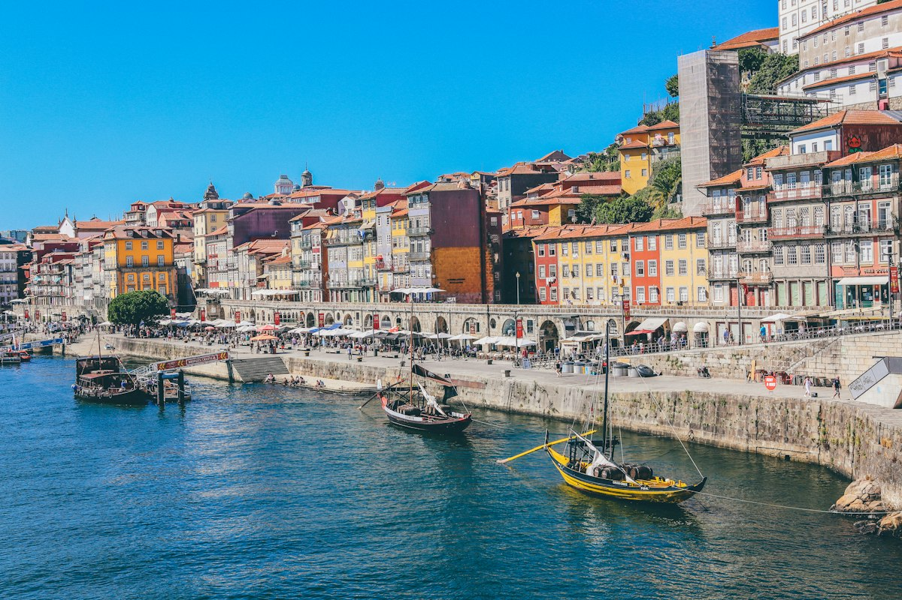
Ribeira kıyısındaki rengarenk taş evler, ikonik Dom Luís I Köprüsü ve dünyaca ünlü şarap mahzenleriyle Portekiz'e ismini veren kadim şehir.
Hüzün ve aşkın ezgisi Fado müziği, mavi-beyaz sırlı çiniler (Azulejo), meşhur Pastel de Nata tatlısı ve deniz mahsulleri mutfağın vazgeçilmezidir.
Roma lejyonlarının Latincesinden doğan, Mağribi Arapçasıyla zenginleşen ve Büyük Coğrafi Keşiflerle 5 kıtaya yayılan büyüleyici bir dil serüveni.
Bin yılı aşkın bir süreçte farklı medeniyetlerin izleriyle yoğrulan dilin kronolojik evrimi:
Romalı lejyonlar İber Yarımadası'nı fethettiğinde yerel Kelt ve İber dilleri yerini Roma askerlerinin ve halkın konuştuğu Latincesine bıraktı. Modern Portekizce kelimelerin yaklaşık %80'i doğrudan Latince kökenlidir.
500 yılı aşkın Endülüs (Müslüman) döneminde Portekizceye tarım, bilim, mimari ve idareyle ilgili 1.000'den fazla Arapça kelime girmiştir. Özellikle "al-" ve "aç-" önekli kelimeler bu mirastır: alface (marul), azeite (zeytinyağı), açúcar (şeker), almofada (yastık), Algarve (el-Garb / Batı) ve Alfama (sıcak su kaynağı).
Kuzeybatı İberya'da şekillenen bu ortak dil, Orta Çağ trubadur şiirlerinin ve lirik edebiyatının altın dili oldu. Krallar ve şairler aşk ve hiciv şarkılarını (Cantigas) bu dilde yazdı.
"Şair Kral" olarak bilinen Kral I. Dinis, dili resmi krallık dili (Língua Portuguesa) ilan etti. Tüm resmi belgelerin ve kanunların bu dilde yazılmasını emretti ve ülkenin ilk üniversitesini kurdu.
Portekizli denizcilerin Brezilya, Afrika ve Asya'ya ulaşmasıyla Portekizce küresel bir ticaret ve diplomasi dili oldu. 1572 yılında şair Luís de Camões'in yazdığı "Os Lusíadas" destanı, modern Portekizcenin edebi şaheseri oldu. Bugün bu nedenle Portekizceye saygıyla "A Língua de Camões" (Camões'in Dili) de denir.
Bayrak üzerindeki bölgelere tıklayarak veya aşağıdaki butonları kullanarak her bir sembolün derin anlamını canlı olarak keşfedin!
Yeşil renk, Portekiz halkının geleceğe duyduğu derin umudu ve kararlılığı simgeler. 5 Ekim 1910 Cumhuriyet Devrimi ile Monarşi'nin mavi-beyaz bayrağı kaldırılarak aydınlık bir gelecek inancıyla bayrağın ilk %40'lık bölümü yeşile boyanmıştır.
Yüzyıllar boyunca kraliyet hanedanlarına göre şekillenen bayrak, 1910 yılında cumhuriyetin ilanıyla bugünkü ikonik formuna kavuştu:
Beyaz zemin üzerine mavi bir haçtan oluşan en eski Portekiz sembolüydü. Bağımsızlık kazanıldıktan sonra kalkan figürleri eklenmeye başlandı.
Kral I. Manuel döneminde keşifler çağının altın çağı yaşandı. Denizcilik mirasının sembolü olan halkalı küre (Esfera Armilar) ilk kez milli semboller arasına girdi.
Anayasal monarşi süresince eşit bölünmüş dikey mavi ve beyaz renkler kullanıldı. Ortada krallık tacı ve arma yer alıyordu.
1910 devrimiyle krallık yıkıldı. Columbano Bordalo Pinheiro ve João Chagas liderliğindeki özel komisyon yeşil ve kırmızı renkleri seçti. Bayrak, 30 Haziran 1911'de Ulusal Meclis kararıyla resmi bayrak ilan edildi.
1911'den 2002'ye kadar kullanılan tarihi Portekiz Esküdosu (Escudo) ve günümüzün resmi para birimi Euro (€) banknot ve madeni paraları.
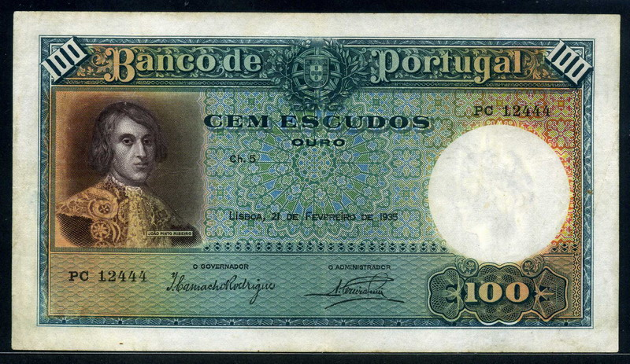
1640 Restorasyon Savaşı'nın kahramanı ve Portekiz'in İspanyol hakimiyetinden kurtulmasında kilit rol oynayan João Pinto Ribeiro onuruna basılmıştır.
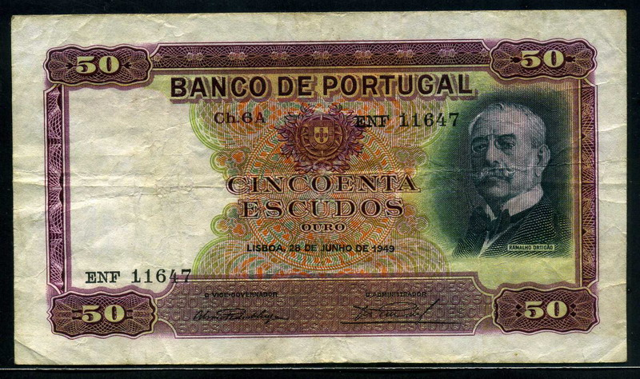
19. yüzyıl Portekiz edebiyatının ve "As Farpas" hiciv serisinin usta yazarı Ramalho Ortigão anısına Banco de Portugal tarafından çıkarılmıştır.
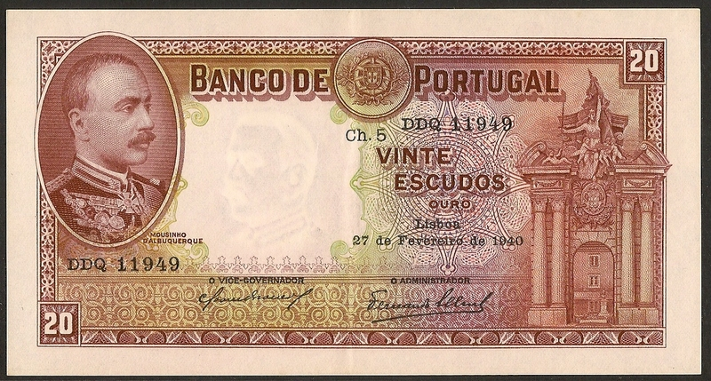
Afrika seferlerinde öne çıkan süvari subayı ve sömürge valisi Joaquim Augusto Mouzinho de Albuquerque temalı tarihi banknottur.
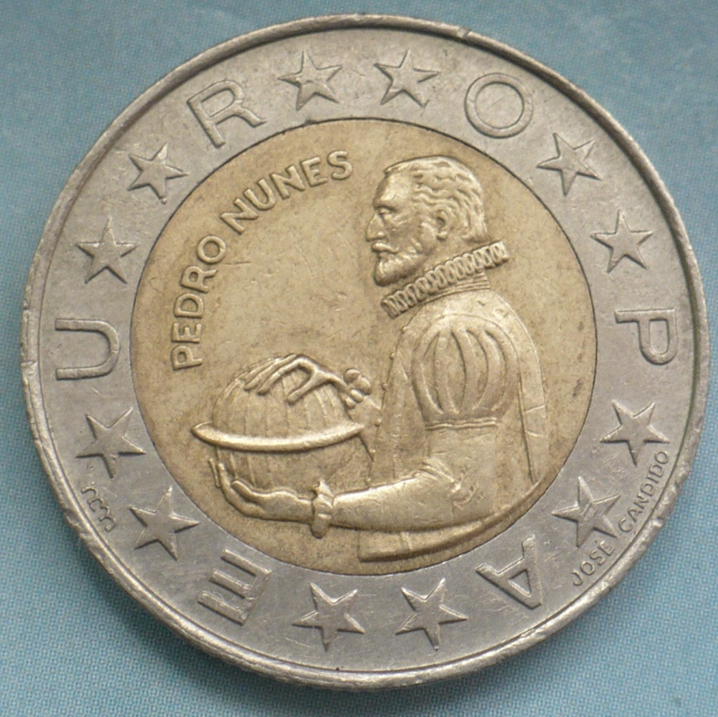
Bakır-Nikel alaşım. Karavel yelkenlisi ve denizcilik motifleri işlenmiştir.
🔄 Tekrar çevirmek için tıklaCoğrafi Keşifler ve denizcilik temalarıyla bezenmiş en prestijli madeni paralardandı.
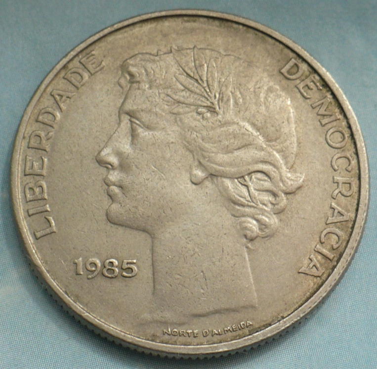
Ön yüzünde Portekiz arması, kenarında tırtıklı güvenlik deseni yer alır.
🔄 Tekrar çevirmek için tıklaÖn yüzünde Portekiz arması, arka yüzünde ise ulusal motifler yer alır.
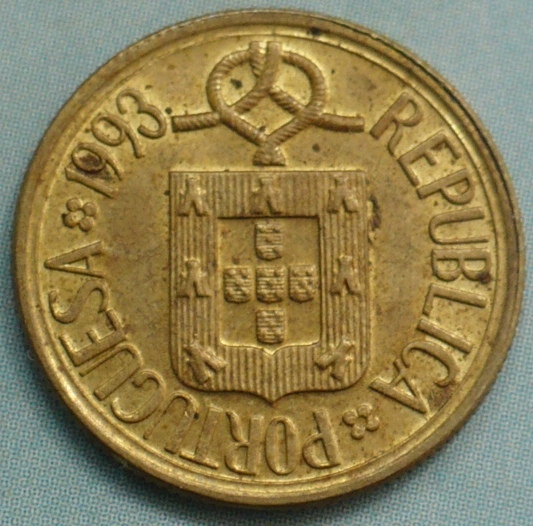
Alüminyum-Bronz alaşımı. 1911 devriminin temel para birimi simgesiydi.
🔄 Tekrar çevirmek için tıklaEsküdo para biriminin temel birimi. 2002'de Euro'ya geçişle tarihe karıştı.
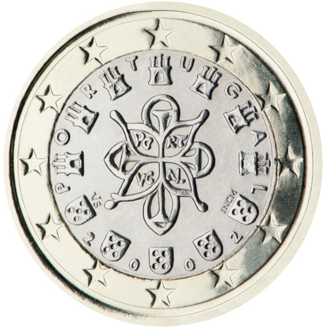
Kral I. Afonso Henriques'in 1144 mührü. Dış halkada 12 yıldız yer alır.
🔄 Tekrar çevirmek için tıklaÇift metalli yapıda (pirinç ve nikel). Kraliyet mührü, 7 kale ve 5 kalkan içerir.
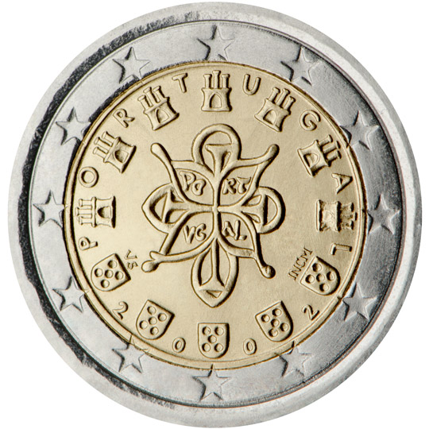
Kenar kabartmasında 5 kalkan ve 7 kale motifi tekrarlanır.
🔄 Tekrar çevirmek için tıklaDolaşımdaki en yüksek değerli madeni paradır.
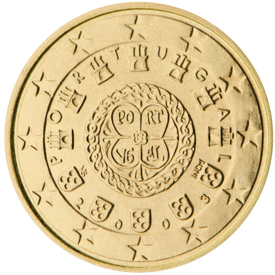
Nordic Gold alaşım. Kral Afonso Henriques'in 1142 mührü bulunur.
🔄 Tekrar çevirmek için tıklaKuzey altını alaşımı ile üretilmiş günlük alışveriş paralarıdır.
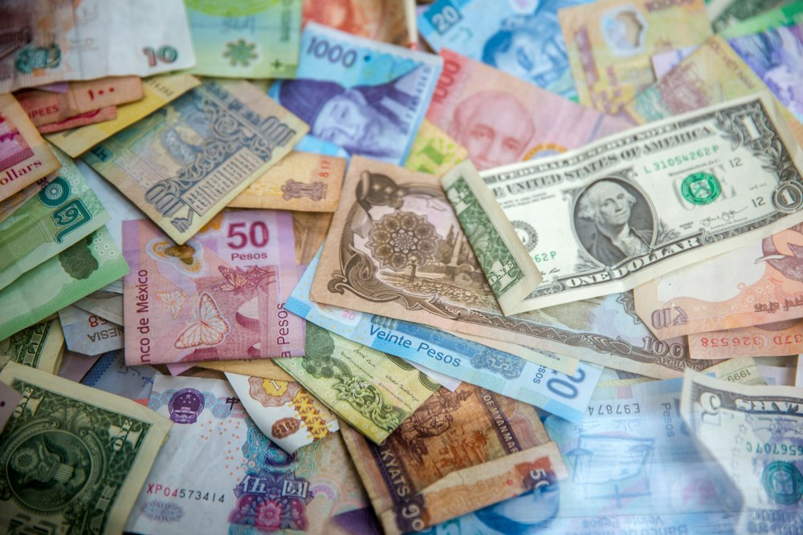
Euro banknotlarının tasarımı tüm Euro Bölgesi ülkelerinde ortaktır. Banknotların ön yüzünde pencereler ve kemerler (açıklık ve iletişimi), arka yüzünde ise Avrupa halklarını birleştiren köprüler resmedilmiştir.